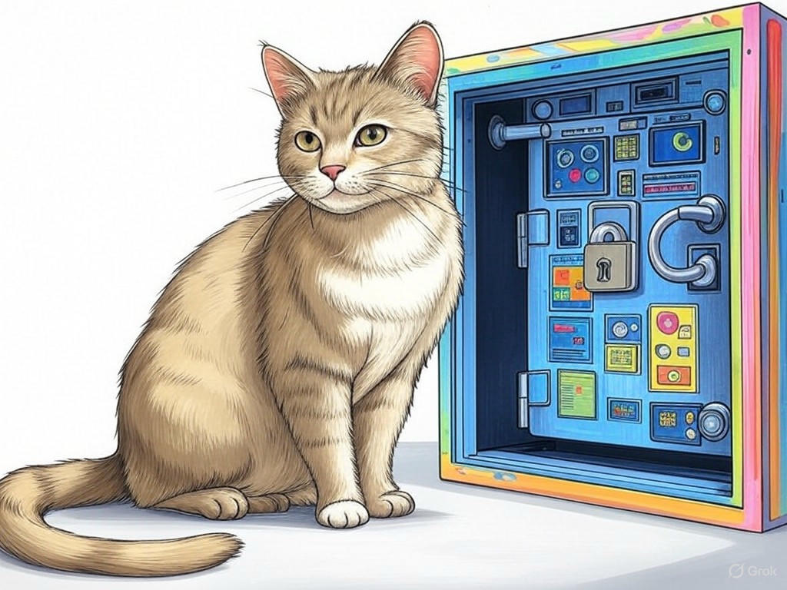
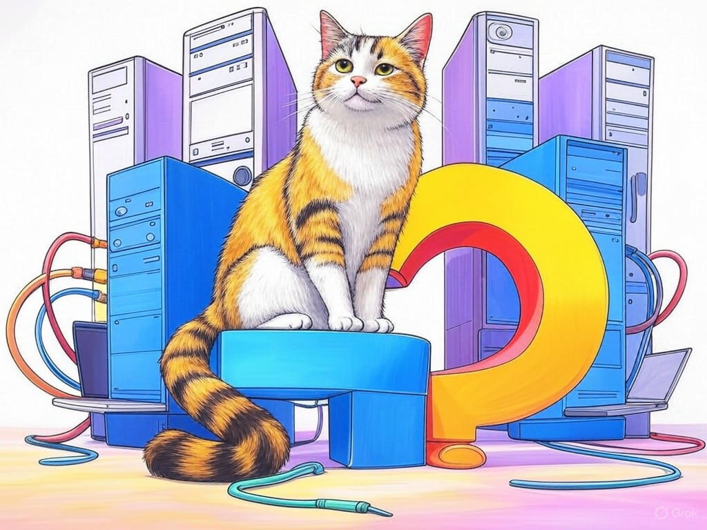

7 Proven Ways to Actually Solve Your IT Woes with Troubleshooting and Repair Services in New Albany, IN
Table of Contents
- Introduction: Understanding Your Specific Challenges
- How Can You Quickly Resolve IT Downtime in New Albany, IN?
- Finding Reliable IT Repair Services Near the Sherman Minton Bridge
- Cost-Effective IT Solutions for Businesses in New Albany, IN
- Educating Yourself on IT Maintenance: A Step-by-Step Guide
- Ensuring Data Security During IT Repairs: What You Need to Know
- Case Studies: Success Stories from New Albany Businesses
- Addressing Common Concerns and Objections About IT Services
- Frequently Asked Questions About IT Troubleshooting in New Albany, IN
- Conclusion: Your Implementation Plan and Next Steps
Introduction: Understanding Your Specific Challenges

We know how frustrating it can be when your IT systems in New Albany, IN, start acting up. Whether it's a sudden network outage or a slow computer that's hampering your productivity, these issues can disrupt your business operations significantly. IT troubleshooting and repair services in New Albany, IN, are essential for keeping your business running smoothly. These services encompass everything from diagnosing hardware and software problems to implementing solutions that prevent future issues. In New Albany, where businesses thrive near landmarks like the Sherman Minton Bridge, reliable IT support is crucial. According to a recent survey, businesses that invest in proactive IT maintenance experience 30% fewer downtime incidents annually. In this article, we'll explore seven proven strategies to help you overcome your IT challenges effectively. You'll learn how to quickly resolve IT downtime, find reliable repair services, and ensure cost-effective solutions tailored to your needs. If you're struggling with frequent IT issues, start by documenting each problem as it occurs, including the time, impact, and any immediate actions taken. This will help you identify patterns and communicate effectively with IT support. You're not alone in this journey, and we're here to guide you through it.
So what? Understanding your IT challenges is the first step toward finding effective solutions, ensuring your business in New Albany, IN, remains efficient and competitive.How Can You Quickly Resolve IT Downtime in New Albany, IN?
You're likely familiar with the basics of IT troubleshooting, but let's dive deeper into how you can quickly resolve IT downtime in New Albany, IN. In our experience, having a structured approach can make all the difference. Start by identifying the root cause of the issue. Is it a hardware failure, a software glitch, or a network problem? Once identified, prioritize the issue based on its impact on your business operations. For hardware issues, consider having spare parts on hand, especially for critical components. For software and network issues, ensure you have remote access tools and a clear escalation path to your IT support team.
- Identify the root cause: Use diagnostic tools to pinpoint the issue.
- Prioritize: Address issues that have the most significant impact first.
- Have a plan: Keep spare parts and remote access tools ready.
So what? By quickly resolving IT downtime, you can maintain productivity and keep your business operations running smoothly in New Albany, IN.
Finding Reliable IT Repair Services Near the Sherman Minton Bridge
We understand the importance of finding reliable IT repair services, especially when you're located near the Sherman Minton Bridge in New Albany, IN. The proximity to this landmark means you're in a bustling business area where downtime can be costly. To find the right service provider, consider the following decision criteria:
- Response Time: How quickly can they respond to your issues?
- Expertise: Do they have experience with your specific IT systems?
- Reputation: What do other businesses in the area say about their services?
- Cost: Are their services within your budget?
So what? By choosing reliable IT repair services near the Sherman Minton Bridge, you can ensure quick, effective solutions to your IT problems, keeping your business in New Albany, IN, running smoothly.
Cost-Effective IT Solutions for Businesses in New Albany, IN

We know that managing IT costs is a priority for businesses in New Albany, IN. Whether you're near the bustling downtown area or in a quieter part of town, finding cost-effective IT solutions can make a significant difference. Here's how you can achieve this:
- Preventive Maintenance: Regular check-ups can prevent costly repairs. Schedule routine maintenance to keep your systems running smoothly.
- Cloud Services: Consider moving some of your operations to the cloud to reduce hardware costs. Cloud solutions can be more scalable and cost-effective.
- Managed IT Services: Outsourcing your IT needs to a managed service provider can be more economical than maintaining an in-house team.
So what? By implementing cost-effective IT solutions, you can allocate more resources to other areas of your business, enhancing your overall efficiency and profitability in New Albany, IN.
Educating Yourself on IT Maintenance: A Step-by-Step Guide
You're smart to want to educate yourself on IT maintenance, as it can save you time and money in the long run. Let's walk through a step-by-step guide to help you understand and implement effective IT maintenance practices in New Albany, IN:
- Assess Your Current IT Infrastructure: Start by taking inventory of your hardware, software, and network systems. Identify what's working well and what needs improvement.
- Create a Maintenance Schedule: Develop a regular schedule for checking and updating your systems. This could include monthly software updates, quarterly hardware checks, and annual network audits.
- Implement Best Practices: Follow industry best practices such as regular backups, antivirus updates, and user training on cybersecurity.
- Monitor and Adjust: Use monitoring tools to keep an eye on your systems' performance. Adjust your maintenance plan based on what you learn.
So what? By educating yourself on IT maintenance, you can proactively manage your systems, reducing downtime and ensuring your business in New Albany, IN, remains efficient.
Ensuring Data Security During IT Repairs: What You Need to Know
We understand that data security is a top concern for businesses in New Albany, IN, especially during IT repairs. You might be wondering how to protect your sensitive information when your systems are being worked on. Here's what you need to know:
- Backup Your Data: Before any repair work begins, ensure you have a recent backup of all critical data. This can be done using cloud storage or external drives.
- Use Secure Repair Services: Choose IT repair services that have a strong track record of data security. Look for certifications like ISO 27001, which indicate a commitment to information security.
- Monitor Access: Keep track of who has access to your systems during repairs. Use access control measures to limit exposure to sensitive data.
- Encrypt Data: If possible, encrypt your data before handing over your devices for repair. This adds an extra layer of security.
So what? By ensuring data security during IT repairs, you can protect your business's sensitive information and maintain trust with your clients in New Albany, IN.
Case Studies: Success Stories from New Albany Businesses

We've seen firsthand how businesses in New Albany, IN, have overcome their IT challenges. Let's look at some success stories that illustrate the power of effective IT troubleshooting and repair services. In one case, a local manufacturing company near the Sherman Minton Bridge was experiencing frequent network outages that disrupted their production line. By implementing a backup internet solution and regular IT maintenance, they reduced downtime by 50% and increased productivity significantly. In another example, a small retail business in downtown New Albany struggled with slow computers. After partnering with a local IT repair service, they upgraded their hardware and implemented cloud solutions, resulting in a 30% increase in system performance.
In our experience, businesses that take a proactive approach to IT management see tangible benefits. Here's a decision criteria framework to help you choose the right IT solutions:- Impact on Business: How will the solution affect your operations?
- Cost vs. Benefit: Does the solution provide a good return on investment?
- Scalability: Can the solution grow with your business?
- Support and Maintenance: What kind of ongoing support will you receive?
So what? Learning from these success stories can inspire you to implement similar strategies, ensuring your business in New Albany, IN, thrives despite IT challenges.
Addressing Common Concerns and Objections About IT Services
By now, you've gained a solid understanding of IT troubleshooting and repair services in New Albany, IN. Let's address some common concerns and objections you might have about these services. One frequent concern is the cost of IT services. While it's true that IT support can be an investment, consider that businesses that proactively manage their IT see a 20% reduction in overall IT costs due to fewer emergency repairs. If you're struggling with the cost of IT services, start by evaluating your current IT expenses and identifying areas where proactive maintenance could save you money specifically.
Another common objection is the fear of downtime during repairs. However, with the right IT repair services, downtime can be minimized. In New Albany, where businesses often operate near critical infrastructure like the Sherman Minton Bridge, having a reliable IT partner can make all the difference. If you're concerned about downtime, choose an IT service provider that offers off-hours repairs and remote support to minimize disruption.So what? By addressing these common concerns, you can make informed decisions about your IT services, ensuring your business in New Albany, IN, remains efficient and secure.
Frequently Asked Questions About IT Troubleshooting in New Albany, IN
You've come a long way in understanding IT troubleshooting and repair services in New Albany, IN. Let's tackle some frequently asked questions to further clarify any doubts you might have. One common question is, "How often should I schedule IT maintenance?" The answer depends on your business's size and complexity, but a good rule of thumb is to schedule monthly software updates, quarterly hardware checks, and annual network audits. If you're struggling with deciding on a maintenance schedule, start with monthly software updates specifically. This can help prevent many common issues.
Another question we often hear is, "What should I look for in an IT repair service?" Look for providers with quick response times, relevant expertise, a strong reputation, and cost-effective solutions. In New Albany, where businesses often need immediate support, these factors are crucial. If you're concerned about finding the right IT repair service, use the decision criteria framework we discussed earlier to guide your choice.So what? By understanding these FAQs, you can better manage your IT needs and ensure your business in New Albany, IN, remains efficient and secure.
Conclusion: Your Implementation Plan and Next Steps

You've now learned seven proven ways to solve your IT woes with troubleshooting and repair services in New Albany, IN. From quickly resolving IT downtime to ensuring data security during repairs, you're equipped with the knowledge to keep your business running smoothly. Remember, businesses that implement these strategies see significant improvements in IT reliability and cost savings. Your intelligence in seeking out this information is commendable, and now it's time to put it into action.
Your next steps are clear: start by assessing your current IT infrastructure and identifying areas for improvement. Implement a structured maintenance plan, consider cost-effective solutions like cloud services, and choose reliable IT repair services near landmarks like the Sherman Minton Bridge. If you're struggling with any of these steps, don't hesitate to reach out for help.Contact Perfect Your Customer, LLC today for a consultation that's tailored to your specific needs and challenges with IT troubleshooting and repair services in New Albany, IN. Our team of experienced experts can help you implement the solutions discussed in this article, ensuring your business thrives. We offer personalized IT support, cost-effective solutions, and reliable repair services that are designed to meet the unique needs of businesses in New Albany, IN. Working with us means you'll benefit from reduced downtime, enhanced data security, and a proactive approach to IT management.
So what? By partnering with Perfect Your Customer, LLC, you'll gain peace of mind knowing your IT needs are in capable hands, allowing you to focus on growing your business in New Albany, IN.